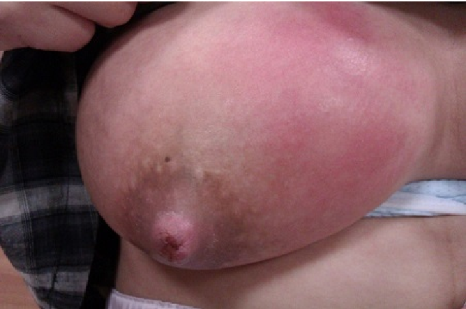

王女士，初產婦，陰道生產，採純母乳哺育，產後6週重返職場的一週後，主訴發燒38℃，右側乳房情況如圖所示，觸診溫熱且有痛感。最可能的診斷是？ 

顯示正確答案
正確答案：(C) 因為乳頭可見傷口，所以最可能是乳腺炎（mastitis）

正確答案：(C) 因為乳頭可見傷口，所以最可能是乳腺炎（mastitis）
「護理師國考刷題」App 內有本題完整詳解，還能把它加入錯題本、用閃卡定期複習。
4,810 題歷屆考古題全部附詳解。